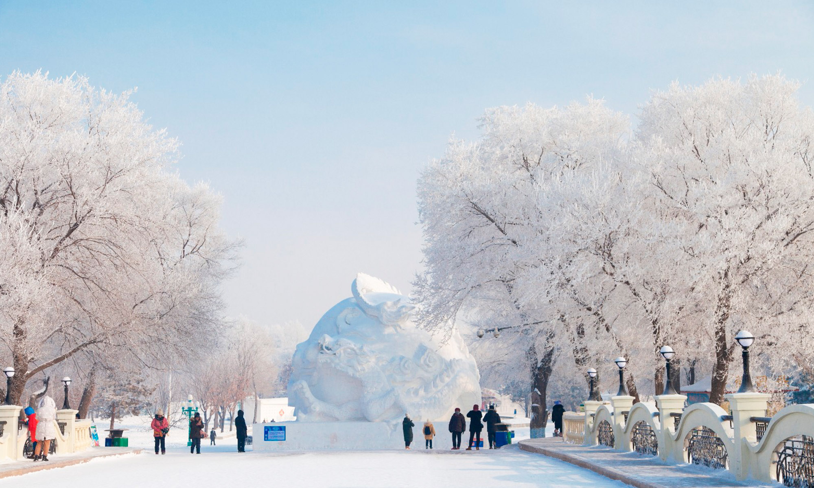
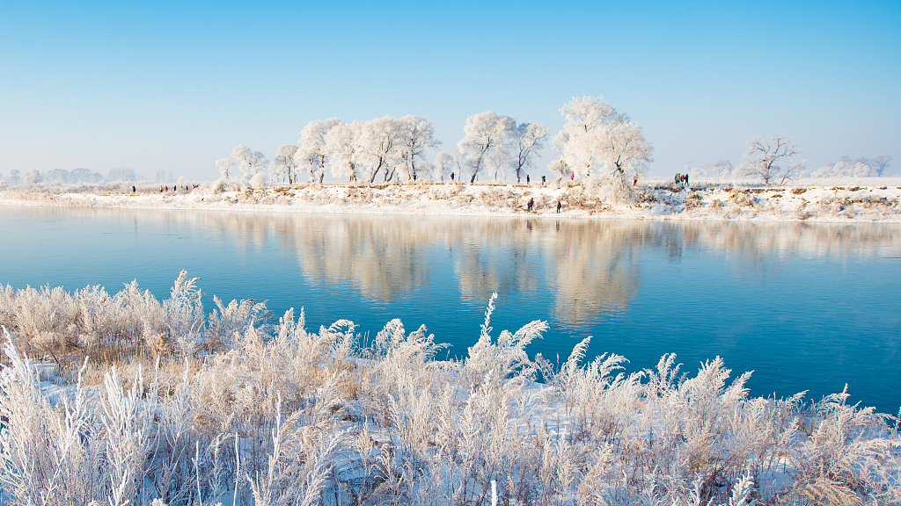

Top 3 Nature Spots in Harbin
Harbin Ice and Snow World

Introduction
Harbin Ice and Snow World is the city’s winter crown jewel—open only December to February, this 600,000-square-meter park is built entirely from ice and snow sourced from the Songhua River. Every year, 10,000+ workers spend a month constructing its attractions: 30-meter-tall ice castles (modeled after European palaces or Chinese temples), 500-meter-long ice slides (you sit on a foam mat and zoom down at 20 km/h), and snow sculptures of animals, movie characters, and historical figures (some as big as a 3-story building). At night, the park transforms—over 200,000 LED lights are embedded in the ice, turning castles pink, blue, and purple, and the snow sculptures glow softly. Don’t miss the “Ice Bar” (inside a frozen building) where you can order vodka or hot chocolate served in ice cups.
Best Time to Visit
Late December–early February: The park is fully built, and temperatures are cold enough to keep ice from melting (avoid late February, when ice starts to soften).
Evening (5:00–9:00 PM): Lights are on, and the ice castles look magical—arrive at 4:30 PM to see both day and night views.
Price
Peak season (December 25–February 15): 330 CNY/adult, 165 CNY/students (with ID), free for kids under 1.2 meters.
Off-peak (early December, late February): 290 CNY/adult, 145 CNY/students.
Book online: Tickets sell out fast—buy via the park’s official WeChat mini-program 1 week in advance.
Sun Island Scenic Area

Introduction
Sun Island, a 88-square-kilometer island on the north bank of the Songhua River, is Harbin’s “seasonal chameleon”—winter brings snow art, summer brings greenery. In summer (June–August), it’s a lush retreat: pine forests, lotus-filled lakes, and flower gardens (roses, lilies, and sunflowers) line its paths. Rent a bike (20 CNY/hour) to explore, or take a boat ride on Sun Lake (50 CNY/person) to spot ducks and herons. In winter (December–February), it hosts the “Sun Island Snow Sculpture Art Expo”—over 1,000 snow sculptures are on display, including a 100-meter-long “Snow Dragon” and a replica of the Great Wall made of snow. The expo also has interactive areas: build your own small snowman, or ride a snowmobile (100 CNY/10 minutes).
Best Time to Visit
Summer (July–August): Flowers are in full bloom, and the lake is perfect for boating (20°C–25°C).
Winter (January): Snow sculptures are at their best (fresh snow, no melting), and the expo hosts cultural events (like folk dance performances).
Price
Summer: Free entry to the island; bike rental 20 CNY/hour; boat ride 50 CNY/person.
Winter (snow expo): 240 CNY/adult, 120 CNY/students, free for kids under 1.2 meters.
Songhua River

Introduction
The Songhua River is Harbin’s “mother river,” winding 1,927 kilometers through the city and dividing it into Daoli and Daowai districts. In winter (January–February), the river freezes solid (ice is 1–1.5 meters thick), turning into a giant outdoor playground: locals and tourists skate on the ice (rent skates for 30 CNY/hour), ride horse-drawn carriages (100 CNY/30 minutes), or try ice-fishing (guides charge 200 CNY/group to drill a hole and set up gear). In summer (June–August), the ice melts, and the river becomes a popular spot for cruises—take a 40-minute tour (80 CNY/person) to see Harbin’s skyline, including the Dragon Tower and Sophia Cathedral, from the water. The riverbank also has parks with walking trails and outdoor gyms, where locals practice tai chi or fly kites in the afternoon.
Best Time to Visit
Winter (January): Ice is thickest, and activities like ice-fishing are in full swing (-20°C to -25°C).
Summer (July): River breeze cools the city, and cruises are comfortable (25°C–28°C).
Price
Winter: Ice-skate rental 30 CNY/hour; horse-drawn carriage 100 CNY/30 minutes; ice-fishing guide 200 CNY/group.
Summer: River cruise 80 CNY/adult, 40 CNY/kids (1.2–1.4 meters), free less than 1.2 meters.